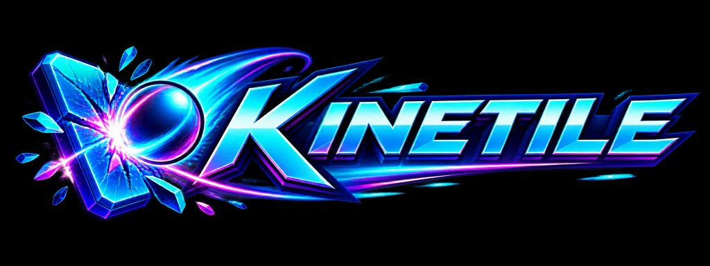

Kinetile
A Breakout/Arkanoid-style game built as twenty-nine complete snapshots. Each iteration is a self-contained, playable game. Iterations 1–5 are monochrome; colour and extras arrive later.
Open an iteration:
- Title screen and a movable bat
- Ball that bounces off walls and the bat
- Lives and game over
- Fixed 8×14 brick wall
- Random formations and levels
- Full colour and sound
- Scoring and high-score table
- Wider-bat power-up
- Laser bat power-up
- Piercing-ball power-up
- Multi-ball power-up
- Half-speed power-up
- Multi-hit bricks
- Shifting bricks
- Ornamented bat, bricks, and ball
- Catch power-up
- Extra-life capsule
- Break gate
- Barrier floor
- Reduce hazard
- Fast-ball hazard
- Reverse-controls hazard
- Fireball
- Twin bat
- Magnet bat
- Mystery capsule
- Ball-only Slow
- Standalone game
- Finished game — pause and save